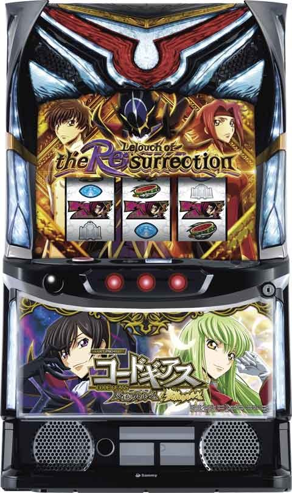

Lコードギアス

 狙い目
狙い目
[AT間天井狙い]
慎重派は400Gから400-450Gの前兆外れたら一旦やめ。
前兆無しならそのままAT当選まで。
モードA(モード不明含む)
積極派 460Gから
慎重派 490Gから
モードBCなら
390Gから
※AT後ボーナス0スルー時は1/4でエピソードボーナスになるため少し優遇される。
0スルー時 330Gから
[ゾーン狙い]
200から250のゾーン狙い(AT間)
0スルー 140Gから
1スルー 以降 210Gから
(100-200Gでボーナス非当選の台 180Gから)
※100-200Gのゾーンでボーナス当選した場合、モードBCの可能性が上がるため、200-250のゾーンが弱くなる可能性あり。
[有利区間切れ狙い]
差枚プラスでアラムの門へ入った場合は有利切れてるケースがあり。
前回AT終了時点で差枚1600枚以上なら200前半のゾーンまで。
0スルーまたはモードBかCならAT当選まで。
差枚1000枚以上なら60Gから200G前半のゾーンまで。
[リセット狙い]
0スルー
60Gから
1スルー以降
140Gから
やめ時
AT後の引き戻し区間(約40G)
以下の場合は引き戻し確認。
差枚+1000枚以上
15セット以上
3セット、5セット終わりの場合は、4.7セット目がチャンスなので引き戻し見て良いかも？
それ以外は引き戻し確認無しでやめ。
ボーナス後は前兆ステージ消化してやめ。
その他
各モードと特徴

規定ゲーム数

参考元
基本情報
- メーカー: サミー
- 機械割: 97.9% 〜 113.4%
- 導入開始日: 2024年02月05日（月）
- ゲーム性概要: 大人気シリーズがついにスマスロで登場。通常時はゲーム数消化やCZでボーナスに当選し、ボーナス中にATを目指すというゲームフロー。通常時ゲーム数はAT当選までリセットされない点も嬉しいポイントだ。 ATは純増約2.8枚/G、1セット30Gのセット継続型。メインパートとバトル（KMB）をループさせる『パチスロコードギアス反逆のルルーシュR2』をイメージした仕様で、レア役・ボーナス・特化ゾーンなどのKMBゲーム数獲得契機が存在する。 特化ゾーン「無限新生」と「A.A.モード」は上乗せのたびにゲーム数再セットを抽選。エンディング後などに突入する「アラムの門」成功で「ギアスラッシュ」へ突入する。


打ち方
打ち方・小役
打ち方（小役狙い）
「最初に狙う絵柄」

左リール上段付近にBARを狙う。
「チェリー停止時」
成立役…弱チェリー／強チェリー

「下段BAR停止時」
成立役…ハズレ／リプレイ／ベル／ギアスベル／弱チャンス目

ギアスベルはおもにAT中とギアスラッシュ中に出現する。
「スイカ停止時」
成立役…スイカ／強チャンス目

中リールにC.C.を目安にスイカを狙う。右リールはこぼしがないのでフリー打ちでOKだ。
「レア役の停止形」

変則押しはNG

通常時、押し順ナビ非発生時は左リール第1停止での消化を推奨する。
リール制御
ギアスベルの出現タイミング
| タイミング | 内容 |
|---|---|
| 通常時・CZ中 | 非出現 |
| AT・KMB中 | 100%出現 |
| AT・ファイナルジャッジ時 | 非出現 |
| ギアスラッシュ中 | 100%出現 |
| 上記以外 | 抽選で出現 |
ギアスベル成立時の状態に応じて出現の有無（ナビを出すか）が変化する。
解析情報通常時
小役関連
レア役確率
| 役 | 確率 |
|---|---|
| 弱チェリー | 1/109.2 |
| スイカ | 1/93.6 |
| 強チェリー | 1/436.9 |
| 弱チャンス目 | 1/131.1 |
| 強チャンス目 | 1/364.1 |
| ギアスベル（※） | 1/10.6 |
| ギアスベル除くレア役合算 | 1/30.8 |
※ギアスベルはKMB中、特化ゾーン中の確率（通常時は出現しない）
モード
モード概要
通常時は4つのモードでゾーンや天井ゲーム数が変化。ATに当選するまで通常ゲーム数は引き継がれる。
モードごとの特徴と天井ゲーム数
| モード | 特徴 | 天井 |
|---|---|---|
| モードA | 100の位が偶数ゲーム数がチャンス | 1000G＋α |
| モードB | 100の位が奇数ゲーム数がチャンス | 700G＋α |
| モードC | 前兆タイミングが50Gズレる | 950G＋α |
| モードD（天国） | 200G以内にAT当選 | 100G＋α |
| リセット | 設定変更時のみ移行 | 700G＋α |
モードごとのボーナス当選率
| ゲーム数 | モードA | モードB | モードC | モードD | リセット |
|---|---|---|---|---|---|
| 100G台 | 10％未満 | 約15％ | 50％以上 | 天井 | 約15％ |
| 200G台 | 50％以上 | 10％未満 | 10％未満 | 50％以上 | |
| 300G台 | 10％未満 | 50％以上 | 約20％ | 10％未満 | |
| 400G台 | 約20％ | 10％未満 | 10％未満 | 50％以上 | |
| 500G台 | 10％未満 | 約30％ | 50％以上 | 約25％ | |
| 600G台 | 50％以上 | 10％未満 | 10％未満 | 10％未満 | |
| 700G台 | 10％未満 | 天井 | 約40％ | 天井 | |
| 800G台 | 約40％ | 10％未満 | |||
| 900G台 | 10％未満 | 天井 | |||
| 1000G台 | 天井 |
各ゾーン到達時（前兆開始時）にボーナスの当否が抽選される。
250G以内のAT当選期待度は約50%だ。
前兆
本前兆中の直撃抽選
CZ・ボーナス本前兆中のレア役で、AT直撃を抽選する。
CZ・ボーナス本前兆中のレア役によるAT直撃確率
| 設定 | 確率 |
|---|---|
| 1 | 1/9970.2 |
| 2 | 1/9403.2 |
| 3 | 1/7335.0 |
| 4 | 1/5346.7 |
| 5 | 1/4122.1 |
| 6 | 1/3395.7 |
リベリオンアタック（CZ）
リベリオンアタック概要

小役入賞で枠色を昇格させていき、ラストのバトルに勝利すればボーナスとなるチャンスゾーン。小役入賞で必ず1段階枠色が上がる。
リベリオンアタック性能
| 項目 | 内容 |
|---|---|
| 当選契機 | ギアスポイント10pt獲得 |
| 継続ゲーム数 | 10G＋バトル3G |
| 消化中の抽選 | 小役入賞で枠色が昇格するほど期待度アップ |
［枠色が上がるほどチャンス］

白＜青＜黄＜緑＜赤＜虹の順に期待度がアップする。
［バトル］

ビスマルク＜ジノ＜ルキアーノの順にチャンス！
成立役別・枠色アップ時の振り分け
| 段階 | レア役以外の小役 | 弱レア役 | 強レア役 |
|---|---|---|---|
| 1段階 | 100% | 55.9% | ー |
| 2段階 | ー | 33.2% | 50.0% |
| 虹へ | ー | 10.9% | 50.0% |
レア役は複数段階アップのチャンス、強レア役は1/2で勝利確定となる。
枠色別・ボーナス期待度
緑（小役3回入賞）までいけば十分に期待できる。
ギアスポイント
ギアスポイント概要
レア役成立時に内部的に獲得する可能性があり、累計10pt獲得でCZに突入する。
ギアスポイント獲得期待度序列
| 役 | 序列 |
|---|---|
| 弱レア役 | 低 |
| 強レア役 | 高 |
※弱レア役…スイカ、弱チェリー、弱チャンス目 強レア役…強チェリー、強チャンス目
直撃抽選
ハズレ時・AT直撃確率
| 設定 | 確率 |
|---|---|
| 1 | 1/18641.4 |
| 2 | 1/13981.0 |
| 3 | 1/7989.2 |
| 4 | 1/5592.4 |
| 5 | 1/3994.6 |
| 6 | 1/3289.7 |
通常時のハズレ時に、AT直撃を抽選する。
解析情報ボーナス時
初当りボーナス
BIGボーナス

30G固定の擬似ボーナス。狙えカットイン発生時にC.C.絵柄が揃えばAT確定。レア役でもAT抽選がおこなわれ、当選時はボーナス終了後に前兆を経由して告知される。 ボーナス終了時にもAT抽選がおこなわれるので、消化中に何も引けなくてもATのチャンスはある。 ボーナス開始時に、チャンス告知と完全告知の2種類から選択可能。完全告知は告知が発生した時点でAT当選が確定する。
BIGボーナス性能
| 項目 | 内容 |
|---|---|
| 当選契機 | 規定ゲーム数到達、CZ成功 |
| 継続ゲーム数 | 30G |
| 消化中の抽選 | レア役でAT抽選、C.C.揃いはAT確定 |
「チャンス告知」

「完全告知」

「AT確定後の抽選」

AT確定後はナイトメアバトルのゲーム数上乗せが抽選される（C.C.揃いはVストック）。
AT当選契機ごとの告知パターン
| 当選契機 | パターン |
|---|---|
| C.C.揃い | ボーナス終了後、即ATへ |
| ボーナス中のレア役 | ボーナス後、前兆を経由して告知 |
| ボーナス終了時の抽選 | ボーナス後、前兆を経由して告知 |
| AT当選時の比率 | C.C.揃い：ボーナス後の前兆経由＝約3：7 |
ボーナス終了後に即、ATへ移行するのはボーナス中にC.C.揃いが出現した場合のみ。その他はボーナス後に前兆を経由してATを告知する。
ボーナス後の前兆パターンと告知される頻度
| パターン | 頻度 |
|---|---|
| 連続演出 | かなり選択されやすい |
| ボタン停止時フリーズ発生 | 選択されにくい |
| いきなりリール上にC.C.揃い | やや選択されやすい |

エピソードボーナス当選率
| 状態 | 当選率 |
|---|---|
| 設定変更後・AT後1回目 | 25.0% |
| 上記以外 | 1.6% |
エピソードボーナス

突入した時点でAT確定のボーナス。設定変更時やAT終了後1回目のボーナスは約25%でエピソードボーナスになる。
ルルーシュオブザリザレクション（AT）
ルルーシュオブザリザレクション概要

30G＋αのセット継続型ATで、30G消化後のナイトメアバトル（KMB）に勝利することで次セットへ継続。AT中はレア役やボーナス、特化ゾーンでKMBゲーム数の上乗せを抽選する。ゲーム数獲得率は内部状態で変化、Vストック獲得時は継続確定だ。
ルルーシュオブザリザレクション性能
| 項目 | 内容 |
|---|---|
| 継続ゲーム数 | 30G＋α |
| 1Gあたりの純増 | 約2.8枚 |
| 消化中の抽選 | KMBゲーム数上乗せ、ボーナス、無限新生 |
KMBゲーム数獲得契機
| No. | 契機 |
|---|---|
| 1 | おもにレア役での抽選 |
| 2 | ボーナス中の抽選 |
| 3 | 無限新生当選、巻き戻り発生時 |
| 4 | ギアスラッシュ中の抽選 |
Vストック獲得契機
| No. | 契機 |
|---|---|
| 1 | C.C.揃い |
| 2 | 無限新生当選時、巻き戻り時の一部 |
| 3 | A.A.モード中の抽選 |
| 4 | エピソードボーナス |
| 5 | ギアスラッシュ中の抽選 |
期待度の高いセット
| セット数 | 内容 |
|---|---|
| 1セット目 | シャムナステージのチャンス |
| 4セット目 | シャムナステージの大チャンス |
| 7セット目 | セット継続でエピソード発生 |
| 10セット目 | シャムナステージのチャンス |
| 14セット目 | シャムナステージのチャンス |
4セット目・7セット目がとくにチャンスなので、ひとまず7セット目到達を目指したい。エピソード発生時は約20%でA.A.モードへ突入する。
小役ごとの各種当選期待度
| 役 | KMBゲーム数 | ボーナス | 無限新生 |
|---|---|---|---|
| ギアスベル | ◎ | ー | ー |
| 弱チェリー | 〇 | △ | △ |
| スイカ | 〇 | △ | △ |
| 弱チャンス目 | 〇 | △ | △ |
| 強チャンス目 | ◎ （※1） | 〇 | 〇 （※1） |
| 強チェリー | ◎ （※1） | 〇 | 〇 （※1） |
※期待度…△＜◯＜◎（確定） ※1…ボーナス非当選時のみ当選の可能性あり
レア役でKMBゲーム数、ボーナス、無限新生の3つを抽選。前兆は最大8Gで、長いほど大量上乗せやボーナス当選に期待できる。KMBゲーム数上乗せ後にリールが変則始動すると無限新生突入のチャンスだ。
シャムナステージ

セット開始時に突入を抽選する無限新生の高確ステージで、 毎ゲームの成立役に応じて無限新生突入を抽選 。レア役成立で無限新生のチャンスとなる。突入した時点で無限新生が確定する確定シャムナステージもあり、トータルの無限新生突入期待度は約50%。
セット開始画面がシャムナならチャンス。移行時は残り19Gから始まる羽あおりが成功する形で告知される。
セット数別・シャムナステージ突入率
| セット数 | 突入率 |
|---|---|
| 1セット目 | 12.5% |
| 4セット目 | 64.5% |
| 10セット目 | 12.5% |
| 14セット目 | 12.5% |
| その他 | 0.4% |
確定シャムナステージ当選率
| セット数 | 当選率 |
|---|---|
| 1・4・10・14セット目 | 30.1% |
| その他 | 100% |
1・4・10・14セット目以外はシャムナステージへ行きづらい代わりに、当選時は必ず確定シャムナステージとなる（無限新生確定）。
シャムナステージ中・無限新生当選率
| 役 | 当選率 |
|---|---|
| その他 | 2.3% |
| ギアスベル | 10.2% |
| 弱レア役 | 25.0% |
| 強レア役 | 66.4% |
［スイカ］無限新生当選率
※無限新生中やシャムナステージ滞在時を除く当選率
［スイカ以外］無限新生当選率
| 役 | 当選率 |
|---|---|
| 弱チェリー | 0.4% |
| 強チェリー | 33.2% |
| 弱チャンス目 | 0.4% |
| 強チャンス目 | 15.2% |
※無限新生中やシャムナステージ滞在時を除く当選率
KMBゲーム数上乗せ時の振り分け 低確中
| 上乗せ | ギアスベル | 弱レア役 | 強レア役 |
|---|---|---|---|
| ＋1G | 97.3% | 78.1% | ー |
| ＋2G | 2.7% | 7.4% | 62.1% |
| ＋3G | ー | 13.2% | 30.0% |
| ＋5G | ー | 0.8% | 6.6% |
| ＋10G | ー | 0.4% | 1.2% |
高確中
| 上乗せ | ギアスベル | 弱レア役 | 強レア役 |
|---|---|---|---|
| ＋1G | 94.9% | 75.0% | ー |
| ＋2G | 5.1% | 7.4% | 48.0% |
| ＋3G | ー | 14.1% | 33.2% |
| ＋5G | ー | 2.3% | 14.1% |
| ＋10G | ー | 1.2% | 4.7% |
ボーナス当選率
| 役 | エピソード ボーナス | スザク ボーナス | カレン ボーナス | トータル 当選率 |
|---|---|---|---|---|
| 弱チェリー | ー | ー | 3.5% | 3.5% |
| スイカ | 0.8% | ー | ー | 0.8% |
| 弱チャンス目 | ー | 3.1% | ー | 3.1% |
| 強チェリー | 0.4% | 9.8% | 9.8% | 20.0% |
| 強チャンス目 | ー | 6.3% | 6.3% | 12.6% |
ナイトメアバトル（KMB）
ナイトメアバトル概要

ATゲーム数が0になると、継続をかけたKMBに移行。毎ゲームの成立役に応じて勝利抽選がおこなわれ、レア役は勝利確定だ。
ナイトメアバトル性能
| 項目 | 内容 |
|---|---|
| 移行契機 | ATゲーム数消化後 |
| 継続ゲーム数 | KMBゲーム数分（初期ゲーム数は5G） |
| 消化中の抽選 | 成立役に応じて勝利抽選 |
| 消化中の抽選 | レア役は勝利確定 |
小役ごとの勝利期待度・エピソード期待度
| 役 | 勝利期待度 | エピソード期待度 |
|---|---|---|
| ハズレ・ベル | ★ ✕ 1 | 低 |
| リプレイ | ★ ✕ 2 | 低 |
| ギアスベル | ★ ✕ 3 | 低 |
| 弱レア役 | 確定 | 低 |
| 強レア役 | 確定 | チャンス |
| 一撃チャンス | ★ ✕ 3 | 低 |
| C.C.揃い | 確定 | 確定 |
「ファイナルジャッジ」

KMBゲーム数が0になると発生する1Gのラストチャンス。レア役を引けば勝利が確定する。
「Vストックの消費タイミング」
KMBのゲーム数が0になったタイミングでVストックが消費される。Vストックを使うタイミング（ファイナルジャッジ）でレア役を引いた場合は消費ナシ。
「エピソード」
バトル勝利時にエピソードが発生すれば、約20%でA.A.モードへ突入する。
味方キャラごとの勝利期待度
味方キャラごとに、リプレイ・ギアスベル成立時の勝利期待度が異なる（レア役はどのキャラも勝利確定）。
味方キャラごとの勝利期待度
| キャラ | リプレイ | ギアスベル |
|---|---|---|
| スザク | 10.2% | 40.2% |
| カレン | 15.2% | 45.3% |
| コーネリア | 40.2% | 50.0% |
一撃チャンス

2択の押し順に正解してベルが揃えば勝利確定。KMB中の約1/90で発生する。
無限新生
無限新生概要

おもにAT中の巻き戻り発生から突入するST要素を持ったAT。突入した時点でVストックを1個獲得し、以降はKMBゲーム数の上乗せを獲得するたびに巻き戻り（ST再セット）のチャンスとなる。
無限新生性能
| 項目 | 内容 |
|---|---|
| 移行契機 | レア役、シャムナステージ中の抽選 |
| 継続ゲーム数 | 30G＋α |
| 1Gあたりの純増 | 約2.8枚 |
| 巻き戻り期待度 | 最大約85% |
| 消化中の抽選 | KMBゲーム数上乗せのたびに巻き戻りを抽選 |
| 消化中の抽選 | 巻き戻り時はKMBゲーム数orVストック獲得 |
「巻き戻り」

無限新生突入時はVストック確定。2回目以降はKMBゲーム数 or Vストックを獲得する。巻き戻りのタイミングが早い（セット消化ゲーム数が少ないタイミングで上乗せを獲得）するほど、巻き戻り時にVストックを獲得しやすい。
「ループシステム」

約85%ループに当選した時の一部でループシステムが発動する。
「A.A.モード」

巻き戻りの一部で、いきなりA.A.モードへ突入することも!?
巻き戻り発生時・A.A.モード当選率
| 項目 | 当選率 |
|---|---|
| A.A.モード | 2.7% |
巻き戻りが発生するたびに、A.A.モード突入を抽選する。
無限新生ループ率振り分け
| ループ率 | 振り分け |
|---|---|
| 約33% | 25.0% |
| 約50% | 57.0% |
| 約70% | 14.8% |
| 約85% | 3.1% |
A.A.モード
A.A.モード概要


『パチスロコードギアス反逆のルルーシュR2』の蜃気楼をイメージした、KMBゲーム数とVストックの特化ゾーン。ハズレ・リプレイ以外の全役で上乗せ抽選がおこなわれる。継続ゲーム数などは通常のATと共通で、30G消化後はKMBへ移行する。
「シャムナステージとの複合がアツい」
A.A.モード中はボーナス抽選がおこなわれないが、セット開始時のシャムナステージ移行は抽選されている。期待度の高いセットでA.A.モードに突入した場合はA.A.モードが巻き戻る可能性も秘めている。
KMBゲーム数上乗せ当選率
| 役 | 当選率 |
|---|---|
| 押し順ベル | 7.4% |
| ギアスベル | 100% |
| 弱レア役 | 100% |
| 強レア役 | 100% |
上乗せゲーム数振り分け
| 上乗せ | 押し順ベル | ギアスベル | 弱レア役 | 強レア役 |
|---|---|---|---|---|
| ＋1G | 100% | 100% | 95.7% | ー |
| ＋2G | ー | ー | 4.3% | 95.3% |
| ＋3G | ー | ー | ー | 4.3% |
| ＋5G | ー | ー | ー | 0.4% |
Vストック当選率
| 役 | 当選率 |
|---|---|
| 押し順ベル | 6.3% |
| ギアスベル | 25.0% |
| 弱レア役 | 37.5% |
| 強レア役 | 100% |
カレンボーナス
カレンボーナス概要

AT中のレア役で抽選される擬似ボーナス。ハズレ・リプレイ以外の小役で敵を撃破していき、1000体撃破ごとにKMBのゲーム数を獲得する。1000体撃破時の小役を参照して、“カレン覚醒”や“紅蓮乱舞”という2つの上位状態への移行も抽選する。
カレンボーナス性能
| 項目 | 内容 |
|---|---|
| 当選契機 | AT中のレア役 |
| 継続ゲーム数 | 30G＋α |
| 1Gあたりの純増 | 約2.8枚 |
| 消化中の抽選 | ハズレ・リプレイを除く全役で敵を撃破していき 1000体撃破ごとにKMBゲーム数を獲得 |
| 消化中の抽選 | レア役は1000体撃破確定 |
| 消化中の抽選 | 1000体撃破時の役を参照して カレン覚醒・紅蓮乱舞を抽選 |
「カレン覚醒」

カレン覚醒性能
| 項目 | 内容 |
|---|---|
| 突入契機 | 1000体撃破時の一部 |
| 継続ゲーム数 | 5G（カレンボーナスのゲーム数減算ストップ） |
| 消化中の抽選 | ハズレ・リプレイでも必ず敵を撃破 |
| 消化中の抽選 | ベル時の撃破数が優遇 |
「紅蓮乱舞」

紅蓮乱舞性能
| 項目 | 内容 |
|---|---|
| 突入契機 | 1000体撃破時の一部 |
| 継続ゲーム数 | 5G（カレンボーナスのゲーム数減算ストップ） |
| 消化中の抽選 | 毎ゲーム、カレンボーナスのゲーム数上乗せ抽選 |
スザクボーナス
スザクボーナス概要

カレンボーナスと同様に、AT中のレア役で突入の可能性あり。JACゲームに3回＋α当選するまで継続するJAC回数管理型となっていて、成立役に応じてJACゲームの継続ゲーム数が変化。JACゲーム中はKMBゲーム数の上乗せが抽選される。
スザクボーナス性能
| 項目 | 内容 |
|---|---|
| 当選契機 | AT中のレア役 |
| 継続ゲーム数 | JACを3回＋α消化 |
| 1Gあたりの純増 | 約2.8枚 |
| 消化中の抽選 | ベル以外の小役成立でJACゲームへ移行 （成立役でJACゲーム数が変化） |
| 消化中の抽選 | JAC中はベル・レア役でKMBゲーム数加算抽選 |
成立役別のJAC性能
| 役 | JACゲーム数 | 継続ゲーム数など |
|---|---|---|
| ベル | 移行せず | ー |
| ハズレ | シャリオJAC | 4G |
| リプレイ | スザクJAC | 8G |
| 弱レア役 | スザクJAC | 12G |
| 強レア役 | スザクJAC | 12G＋JAC回数加算 |
※弱レア役…スイカ、弱チェリー、弱チャンス目 強レア役…強チェリー、強チャンス目
JAC中の上乗せ当選率
| 役 | 当選率 | KMB上乗せゲーム数 |
|---|---|---|
| 押し順ベル | 37.5% | 1G |
| ギアスベル | 100% | 1G |
| 弱レア役 | 100% | 1G以上 |
| 強レア役 | 100% | 2G以上 |
※弱レア役…スイカ、弱チェリー、弱チャンス目 強レア役…強チェリー、強チャンス目
アラムの門
アラムの門概要

エンディング後やAT終了時の一部で突入するギアスラッシュの超高確率ゾーン。フリーズが発生すればギアスラッシュへ突入、失敗してもAT再突入（前兆経由）は確定だ。
アラムの門性能
| 項目 | 内容 |
|---|---|
| 当選契機 | エンディング後、20セット以上継続後のAT終了時、 AT終了時の一部 |
| 継続ゲーム数 | 20G |
| 消化中の抽選 | フリーズ抽選 （フリーズ発生でギアスラッシュ突入） |
| 成功期待度 | 約64% |
ギアスラッシュ当選率
| 役 | 当選率 |
|---|---|
| リプレイ | 3.1% |
| 共通ベル | 12.9% |
| レア役 | 100% |
ギアスラッシュ
ギアスラッシュ概要

シリーズおなじみの最強特化ゾーンで、成立役に応じてKMBゲーム数とVストックが抽選される。今作では 狙えカットイン発生時にC.C.が揃えばVストック獲得＋ギアスラッシュのゲーム数が15Gに再セット される。
ギアスラッシュ性能
| 項目 | 内容 |
|---|---|
| 当選契機 | ロングフリーズ、アラムの門成功 |
| 継続ゲーム数 | 15GのST型 |
| 消化中の抽選 | KMBゲーム数とVストック抽選 |
成立役ごとの恩恵
| 役 | 恩恵 |
|---|---|
| 押し順ベル | KMBゲーム数 |
| レア役 | Vストック |
| C.C.揃い | Vストック＋15Gを再セット |
「狙えカットイン」

Vストック当選率
| 役 | 当選率 |
|---|---|
| ギアスベル・レア役 | 100% |
※押し順ベル時はKMBゲーム数を上乗せ
C.C.揃い確率
| 役 | 確率 |
|---|---|
| C.C.揃い | 1/16.3 |
| 15GあたりのC.C.揃い期待度 | 61.3% |
AT終了後（引き戻し状態）
AT終了後の引き戻し抽選・優遇ポイント
| No. | 内容 |
|---|---|
| 1 | AT終了時は約40Gの引き戻し状態へ移行し おもにレア役でAT引き戻しを抽選する （筐体ランプ紫発光） |
| 2 | AT後1回目のボーナスは約25%でエピソードボーナス |
| 3 | 250GまでのボーナスorAT期待度は約77% |
| 4 | 250Gまで消化で機械割100%超!? |
引き戻しの契機となるのはおもにレア役。レア役成立後は2〜3G間リールが変則変動するが、レア役ナシで変則変動が始まったり、3G以上変則変動が続くと引き戻しの大チャンスとなる。
引き戻し当選時はATのセット数を引き継ぐため、3セット目や6セット目で終わってしまっても、引き戻せればいきなりシャムナステージやA.A.モードのチャンスが訪れる。
演出情報
通常時
ステージ解説
| ステージ | 示唆 |
|---|---|
| 黒の騎士団 | デフォルト |
| ブリタニア | デフォルト |
| イカルガ艦首部 | ギアスポイント高確示唆 |
| イカルガ艦首部 | AT終了後は引き戻し高確示唆（筐体ランプ紫） |
| 黒の騎士団進軍 | 規定ゲーム数到達前兆示唆 |
| 暗躍 | BIGボーナス後のAT前兆示唆［弱］ |
| C.C. | BIGボーナス後のAT前兆示唆［強］ |
| C.C. | アラムの門失敗時は引き戻し濃厚（筐体ランプ紫） |
［黒の騎士団］

［ブリタニア］

［イカルガ艦首部］

［黒の騎士団進軍］

帯色は白＜青＜黄＜緑＜赤＜虹の順に、本前兆期待度がアップする。
［暗躍］

［C.C.］

前兆に期待できる演出
| 演出 | 示唆 | |
|---|---|---|
| ゲーム数表示 | 白 | デフォルト |
| ゲーム数表示 | 青 | 前兆示唆 |
| ゲーム数表示 | 赤 | 本前兆期待度アップ |
| ピース演出 | 前兆示唆 | |
| 団旗演出 | 前兆示唆 | |
| ハニカム演出 | 前兆示唆 |
［ゲーム数表示］

［ピース演出］

［団旗演出］

［ハニカム演出］

ギアスポイント示唆
「ギアスポイント獲得示唆」

非前兆中に限り、レア役成立時にポイント獲得示唆演出が発生する可能性あり。獲得時は筐体上部にエフェクトが吸い込まれる。エフェクト発生時は1pt以上獲得濃厚だが、エフェクトなし＝ポイント非獲得ではない。
「ギアスポイント蓄積示唆」

連続演出失敗時に筐体上部のギアスランプが発光すれば、ポイントの蓄積を示唆する。
ルルーシュオブザリザレクション（AT）
AT中のステージ解説
| ステージ | 内容 |
|---|---|
| 基本ステージ | デフォルト |
| スザク | 高確期待度アップ |
| カレン | 高確濃厚 |
| DUAL | 超高確濃厚 |
| DUAL | レア役で上乗せ濃厚かつ、上乗せが2回抽選される |
| シャムナ | 無限新生（巻き戻り）の高確ステージ |
カレンステージとDUALステージ中はギアスベル成立時に必ずナビが発生 するため、KMBゲーム数の上乗せが発生しやすい。 また、レア役成立時の上乗せゲーム数も優遇されている（無限新生当選率はステージ共通）。 ステージ（内部状態）はセット開始時の抽選で決まり、セット消化中に昇格や転落が抽選されるわけではない。ただし、最初から滞在状態に応じたステージに必ず滞在するわけではなく、途中で昇格することもある。
［基本ステージ］

［スザク］

［カレン］

［DUAL］

［シャムナ］

セット開始画面の継続期待度示唆

ATのセット開始画面では、当該セットのステージ（内部状態）やシャムナステージ移行期待度を示唆していて、表示されるキャラや枠色に注目。枠色の基本的な序列は白＜緑＜赤＜金の順で、シャムナが表示されればシャムナステージ移行のチャンスとなる。
セット開始画面・枠色の序列
| 枠色 | 序列 |
|---|---|
| 白 | 低 |
| 緑 | ↓ |
| 赤 | ↓ |
| 金 | 高 |
無限新生あおりのリールアクション

AT中の無限新生あおりとして発生するリールアクションは5パターン。各アクションには対応役があり、矛盾すれば無限新生当選が濃厚となる。
リールアクションパターン
| パターン | 内容 |
|---|---|
| スロー始動 | リールの回転開始がスロー |
| スローロング始動 | スロー始動よりもスロー時間が長い |
| 逆始動 | 右・中・左の順に回転 |
| 順始動 | 左・中・右の順に回転 |
| 右リール1回停止 | 回転開始後、右リールが一度停止し、始動 |
パターンごとの対応役と矛盾時の無限新生期待度
| パターン | 対応役・矛盾時の期待度 |
|---|---|
| スロー始動 | ハズレ・リプレイ |
| スロー始動 | ベルはチャンス・レア役は当選濃厚 |
| スローロング始動 | ハズレ・リプレイ （スロー始動よりも期待度アップ） |
| スローロング始動 | ベルは大チャンス・ギアスベルやレア役は当選濃厚 |
| 逆始動 | ベル |
| 逆始動 | リプレイは当選濃厚 |
| 順始動 | ベル |
| 順始動 | リプレイ・ギアスベルは当選濃厚 |
| 右リール1回停止 | レア役 |
| 右リール1回停止 | レア役否定で当選濃厚 |
バトル中の演出パターンと勝利期待度
| パターン | 期待度 |
|---|---|
| チェス出現＋ ナビなし | チャンス |
| チェス出現＋ ナビなし | ウエイト発生で期待度約30% |
| チェス出現＋ ナビなし | 攻撃までつながれば期待度約66%以上 |
| チェス出現＋ナビあり | 大チャンス |
| チェスなし＋ ナビなし | リプレイやレア役に期待 |
| チェスなし＋ ナビなし | ルーレット演出発生で大チャンス |
| チェスなし＋ ナビあり | ギアスベルに期待 |
| チェスなし＋ ナビあり | 攻撃演出発生時の約1/6でギアスベル成立 |
| チェスなし＋ ナビあり | いきなり攻撃や 無演出→ギアスベルといったパターンもアリ |
バトル中の演出は大きく上記の4パターンで構成（C.C.カットインや一撃チャンスを除く）。基本的にはレバーON時にチェスが出現すればチャンスとなる。
その他演出法則
| 演出 | 内容 |
|---|---|
| 左1stナビで攻撃発生 | 勝利確定（弱チャンス目示唆） |
| ウェイト＋C.C.カットイン | 勝利確定（C.C.揃い確定） |
| ギアスランプ発光 | 勝利期待度90%以上 |
| 下パネル消灯 | 勝利確定 |
| ウーファー発生 | エピソード以上 |
［チェス］

KMB勝利後エピソード

基本的には対戦キャラ（KMBで勝利したキャラ）のエピソードが発生するが、矛盾すればA.A.モード確定。カレン＆スザク共闘エピソードなら、発生した時点でA.A.モード濃厚だ。
ミッション・連続演出法則
| 演出 | 内容 |
|---|---|
| 撃破or殲滅ミッション | ＋3G以上確定 |
| 撃破or殲滅ミッション | 弱チャンス目成立で＋10G以上 （基本は弱チェリーor弱スイカ） |
| ゲド・バッカを奪取せよ | 成功で＋1G以上orボーナス |
| 変電所を破壊せよ | ＋2G以上orボーナス |
| 敵包囲網を突破せよ | ＋3G以上orボーナス |
| C.C.の想い | ＋10G以上orボーナス |
［殲滅ミッション］

［ゲド・バッカを奪取せよ］

［変電所を破壊せよ］

［敵包囲網を突破せよ］

［C.C.の想い］

シャムナステージ中の演出法則
| 演出 | 内容 |
|---|---|
| 会話演出 | 基本的にナビなし時に発生 |
| 会話演出 | リールアクションなし時は返答発生かつ レア役否定でチャンス |
| 会話演出 | リールアクションあり時に返答がなければチャンス |
| 枠発光演出 | ナビあり＆リールアクションなし時に発生 |
| 枠発光演出 | 強発光が発生するほどチャンス |
| シャムナ開眼演出 | ナビあり＆リールアクションあり時に発生 |
| シャムナ開眼演出 | 第2停止であおり終了が発生するほどチャンス |
巻き戻り発生濃厚パターン
| No. | パターン |
|---|---|
| 1 | 会話演出で非レア役時に赤文字出現 |
| 2 | 枠発光演出の色が紫 |
| 3 | 暗転あおり音が発生して転落しない |
| 4 | シャムナ開眼演出で第1停止時にあおりが終了 |
| 5 | 「ジルクスタン幹部演出」、「囚われのナナリー演出」 でレア役を否定 |
| 6 | ギアスベルが出現（A.A.モード中を除く） |
［会話演出］

［ジルクスタン幹部演出］

［囚われのナナリー演出］